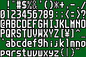

難易度設定について
難易度設定について
DTXMania027 以降では、難易度の違う複数の演奏データ（最大３つ）を、曲選択画面で１行にまとめて表示する機能が追加されました。
このような演奏データに選曲カーソルをあわせると、ハイハットを２回すばやく叩くことで、任意の難易度を選択することが出来るようになります。
３つのファイルを１つにまとめるの図
- セットファイル（set.def）
この機能を使用するには、set.def というテキストファイル（セットファイルと呼ぶ）を準備します。
セットファイルの例#TITLE: IN YOUR EYES
#L1LABEL: BASIC
#L1FILE: InYourEyes_bas.dtx
#L2LABEL: ADVANCED
#L2FILE: InYourEyes_adv.dtx
#L3LABEL: EXTREME
#L3FILE: InYourEyes_ext.dtx
このセットファイルを演奏データ（InyourEyes_bas.dtx, InyourEyes_adv.dtx, InyourEyes_ext.dtx) のあるフォルダに放り込むと、先述の「３つのファイルを１つにまとめるの図」のように表示されるようになります。
- セットファイルの書式
#TITLE: には、曲選択画面で表示される文字列を指定します。
#LxLABEL:(x=1〜3) には好きなラベル文字列を指定することができます。これを省略すると、それぞれ BASIC, ADVANCE, EXTREME というラベルになります。なお、ラベルとして使用できる文字列は以下のとおりです。

#LxFILE:(x=1〜3) には、#LxLABEL に対応する演奏データファイルを指定します。
- 複数の組み合わせの記述
１つのセットファイルには、L1〜L3の組み合わせ（ブロック）を複数個記述することが可能です。これらのブロックは #TITLE 行を境として分けられます。
複数ブロックの記述例#TITLE: すてきな雨上がり【DTX】
#L1LABEL: BASIC
#L1FILE: ameagari_basic.dtx
#L2LABEL: ADVANCED
#L2FILE: ameagari_adv.dtx
#L3LABEL: EXTREME
#L3FILE: ameagari_ext.dtx
#TITLE: すてきな雨上がり【GDA】
#L1LABEL: BASIC
#L1FILE: ameagari_basic.gda
#L2LABEL: ADVANCED
#L2FILE: ameagari_adv.gda
#L3LABEL: EXTREME
#L3FILE: ameagari_ext.gda
この場合、それぞれ３つの難易度を持つ「すてきな雨上がり【DTX】」と「すてきな雨上がり【GDA】」という２つの行が曲リストに載ることになります。（set.defを２つ作成しような感じ。）
１つの set.def に記述できるブロックの数に制限はありません。
- セットファイル利用の際の注意！
- セットファイルがあるフォルダでは、セットファイルに記述されていない演奏データファイルは、フォルダ内に存在していてもすべて無視されます。
- 必ずしも L1 から指定する必要はなく、L2 と L3 だけの指定という設定も可能です。
- GDA と BMS のように異なるデータを１つのセットファイルとしてまとめることも可能ですが、表示上は #L1FILE で指定されたファイルのデータタイプとして扱われます。
- 実装が不十分であり、今後仕様変更の恐れがあります。（汗
- #L1LABEL を #L1LEVEL とか書いてしまうミスにご注意！（経験談(^^;;;;;;
- セットファイルがあるフォルダでは、セットファイルに記述されていない演奏データファイルは、フォルダ内に存在していてもすべて無視されます。